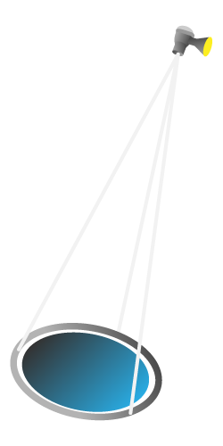
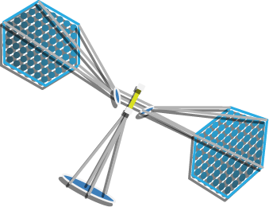
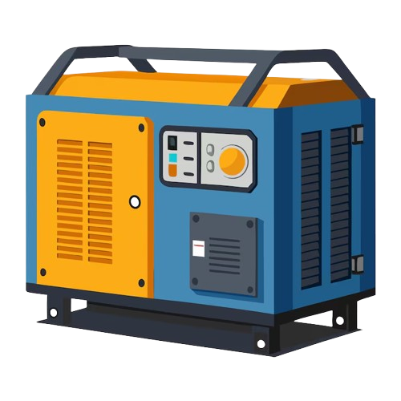

Collect
Convert
Transmit
Receive

Convert
Deliver
Untuk memahami bagaimana cara sistem SBSP bekerja, kita harus melihat dua konsep fisika utama, yaitu efek fotoelektrik dalam vakum dan difraksi gelombang mikro.
Sama seperti pembangkit listrik surya di Bumi, SBSP juga mengandalkan pada efek fotovoltaik, yaitu kondisi dimana material semikonduktor menyerap foton dari cahaya matahari dan melepaskan elektron untuk menciptakan arus listrik. Namun, SBSP beroperasi di lingkungan khusus yang dikenal Air Mass Zero (AMO).
Di bumi, sinar matahari harus melewati atmosfer, yang menyerap dan menyebarkan energi dalam jumlah besar (terutama sinar ultraviolet dan inframerah). Pada saat sinar matahari mencapai permukaan bumi, energi matahari maksimum yang tersedia kira kira kurang 1.000 W/m2. Dalam ruang hampa GEO, energi matahari sama sekali tidak tersaring. Nilai energi yang diterima adalah 1.361 W/m2, yang stabil dan sangat panas.
Untuk menghitung daya murni yang dihasilkan oleh satelit, kita perlu menggunakan persamaan daya fotovoltaik.
Pdc: Total daya listrik DC
Is: Konstanta solar di luar angkasa (1.361 W/m2)
Asa: Total area dari panel surya
ηpv: Efisiensi dari panel surya
Setelah sel fotovoltaik menghasilkan listrik DC dalam jumlah sangat besar, listrik tersebut diubah menjadi gelombang mikro. Namun, bagaimana cara kita mengirimkannya ke Bumi tanpa kehilangan seluruh energinya? Ciri yang paling mencolok dari sistem SBSP adalah skalanya yang sangat besar: desain kelas gigawatt pada umumnya membutuhkan satelit selebar 1 kilometer dan penerima di darat selebar 10 kilometer. Hal ini dikarenakan kita terikat oleh difraksi gelombang. Ketika gelombang elektromagnetik melintasi jarak yang sangat jauh, gelombang tersebut secara alami akan menyebar. Untuk mencegah sinar tersebut menyebar terlalu luas dan membuang-buang energi sebelum mencapai Bumi, para insinyur harus memenuhi Rayleigh Diffraction Limit. Batasan matematis antara diameter pemancar ruang angkasa (Dt) dan diameter penerima di darat (Dr) ditentukan oleh persamaan berikut:
λ: Panjang gelombang
Z: Jarak dari satelit di GEO ke permukaan bumi (35.786 km)
Untuk menghitung energi surya mentah yang mengenai susunan panel surya di luar angkasa, yang dikenal dengan daya insiden (Pinc). Kita mengalikan konstanta solar (Is) dengan area panel surya (Asa):
Kemudian, kita menghitung seberapa banyak sinar matahari tersebut yang diubah menjadi listrik DC oleh panel surya, dengan memperhitungkan efisiensi sel 35%:
Untuk menyalurkan daya tepat 2 GW, efisiensi dari transmisi daya nirkabel (Wireless Power Transfer) haruslah:
Solar panel juga mengalami sedikit degradasi seiring waktu karena radiasi ruang angkasa. Dengan asumsi sistem mengalami degradasi sebesar 10% selama masa pakainya yang 30 tahun, kita dapat memodelkan daya keluarannya (P(t)) menggunakan persamaan peluruhan eksponensial:
Dengan Po = 2, kita dapat menghitung konstanta k:
Untuk mencari total energi yang dihasilkan oleh sistem ini selama 30 tahun, kita menggunakan integral definit untuk menghitung luas di bawah kurva degradasi
Ketika dikonversi menjadi TeraWatt-hours(TWh), satu satelit dapat menghasilkan sekitar:
Kemudian, memancarkan daya gigawatt melintasi ruang vakum sejauh 35.786 km menghadirkan permasalahan baru, yaitu difraksi gelombang. Gelombang mikro secara alami menyebar saat merambat. Untuk menjaga agar pancaran tetap terfokus dan aman, kita harus menggunakan kriteria Rayleigh untuk menetapkan batasan matematis antara diameter pemancar ruang angkasa (Dt) dan diameter penerima di darat (Dr).
Pertama, kita mencari konstanta difraksi orbital darat (K):
Persamaan yang diperoleh:
Jika antena dibuat kecil, maka ukuran rectenna akan menjadi lebih besar.
Karena membangun struktur di luar angkasa sekitar 100 kali lebih mahal dibandingkan di Bumi, kita dapat menuliskan fungsi biaya:
Dengan demikian, lebar antena optimal di ruang angkasa adalah sekitar 1,03 km dan lebar rectenna di Bumi sekitar 10,34 km.
Terakhir, untuk memindahkan pembangkit listrik seberat 5,9 juta kg ke orbit akhirnya, roket tidak dapat langsung menuju GEO. Muatan harus dibawa ke LEO terlebih dahulu, kemudian dipindahkan menggunakan pesawat penarik antariksa.
Untuk menghitung kebutuhan bahan bakar, digunakan persamaan dasar mekanika orbital:
Ini berarti kita harus meluncurkan lebih dari 7,3 juta kg massa ke luar angkasa hanya untuk mendapatkan satelit dengan massa akhir 5,9 juta kg ke orbit GEO.